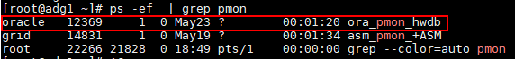
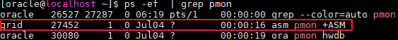

Before backing up Oracle databases, prepare related information by following instructions in Table 1. The following information will be used in Step 4: Registering a Database.

- Ensure that the Oracle database is in the Open state before performing related query operations. For details about how to query the Oracle database status, see Step 1: Checking and Configuring the Database Environment.
- Unless otherwise specified, the operations in this section use Oracle 19 as an example. The operations may vary according to the Oracle version.
- If the Oracle database is deployed in a cluster, you need to log in to all hosts in the cluster and perform the following operations unless otherwise specified.
Item |
Mandatory or Not (Y/N) |
How to Obtain |
To Be Used In |
|---|---|---|---|
Name |
Y |
Name of the database to be protected. The name must be the same as the database name in the production environment. Generally, the value of name is the same as that of db_unique_name. If they are different, set the database name to db_unique_name. You can run the following SQL statement to view the values of name and db_unique_name:
select name,db_unique_name FROM v$database; |
|
Host |
Y |
Name or IP address of the host where the Oracle database is located. If the Oracle database is deployed in a cluster, obtain the names or IP addresses of all hosts where the Oracle database is deployed. |
|
Database Authentication Method (applicable to Linux) |
Y |
Database authentication mode. To query the authentication mode, perform the following steps:
NOTE:
|
|
Database Authentication Method (applicable to Windows) |
Y |
Database authentication mode. To query the authentication mode, perform the following steps:
NOTE:
If multiple agent hosts are specified to perform backup jobs, the database authentication mode must be used for databases. |
|
Database Username and Database Password |
N |
If Database Authentication Method is set to Database authentication, you need to configure the database username and password of the user with the sysdba permissions. |
|
Database Installation Username (applicable to the Linux OS) |
Y |
User for database installation, for example, oracle. The user can log in to the database host and run the following command for query. ps -ef | grep pmon The command output similar to the following is displayed. The user in the row where xxx_pmon_hwdb is located is the user for database installation.  |
|
Database Installation Username (applicable to the Windows OS) |
Y |
User who installs the database. The oracle user is used as an example in the subsequent operations. You can log in to the database host to query the username by performing the following operations:
|
|
Installation Username |
N |
Name of the user for ASM installation. The grid user is used as an example in subsequent operations. NOTE:
In the cluster scenario, log in to any Oracle database host and perform the following operations: You can log in to the Oracle database host as the user and run the following command to query the ASM installation username: ps -ef | grep pmon The command output similar to the following is displayed. The user in the row where xxx_pmon_+ASM is located is the ASM installation user.  |
|
ASM Authentication (applicable to Linux) |
N |
If the database uses ASM, you need to obtain the ASM authentication information.
|
|
ASM Authentication (applicable to Windows) |
N |
If the database uses ASM, you need to obtain the ASM authentication information.
|
|
ASM Username and ASM Password |
N |
If ASM authentication is used, you need to obtain the ASM username and password of the user with the sysdba permissions. |